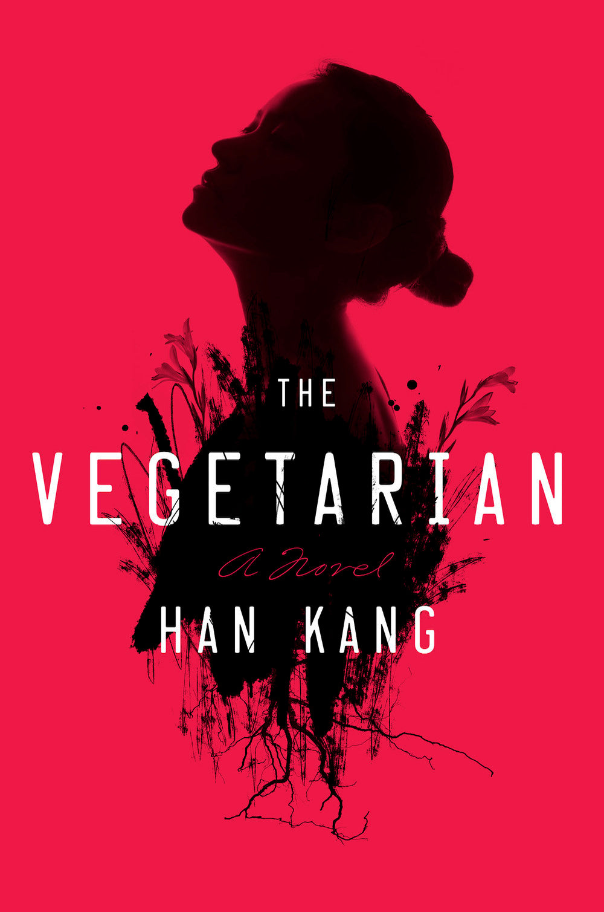

The Vegetarian by Han Kang

Before the nightmares began, Yeong-hye and her husband lived an ordinary, controlled life.
But the dreams—invasive images of blood and brutality—torture her, driving Yeong-hye to purge her mind and
renounce eating meat altogether. It’s a small act of independence, but it interrupts her marriage and sets
into motion an increasingly grotesque chain of events at home. As her husband, her brother-in-law and sister
each fight to reassert their control, Yeong-hye obsessively defends the choice that’s become sacred to her.
Soon their attempts turn desperate, subjecting first her mind, and then her body, to ever more intrusive and
perverse violations, sending Yeong-hye spiraling into a dangerous, bizarre estrangement, not only from those
closest to her, but also from herself.
The vegetarian is a short book originally written in korean. I loved the book so much I finished reading
it in one sitting. It discusses the complexities of the human mind and how a person's mental health affects the people around
them. Although the book is not a psychological thriller it kept me on the edge of my seat as I needed to know what was going
on in her mind.
Yeong-hye is viewed as unremarkable by her husband and peers.She is a victim of her fathers constant physical and mental abuse.
One night a nightmares changes the course of her life. She becomes disgusted by the sight of meat and refuses to eat. Rapidly losing
weight and hysteria cause her family to be unable to care for her. Everyone has little understanding of her mental condition and
she ends up institutionalised.